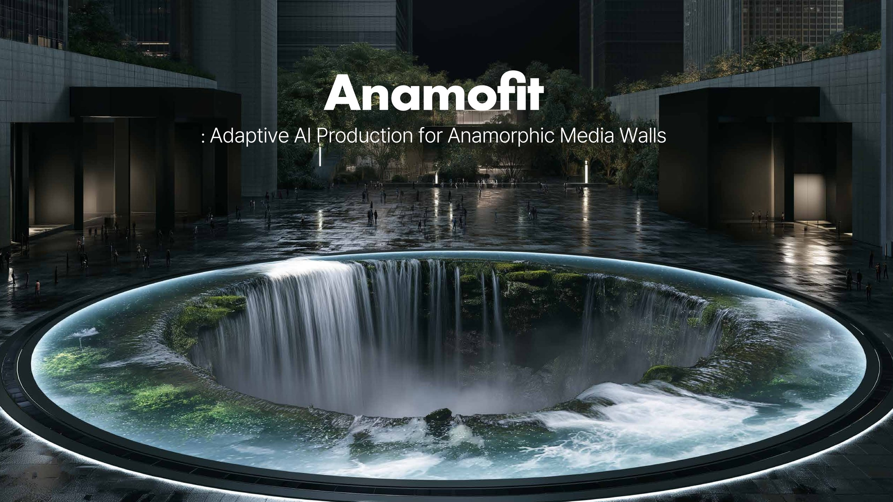
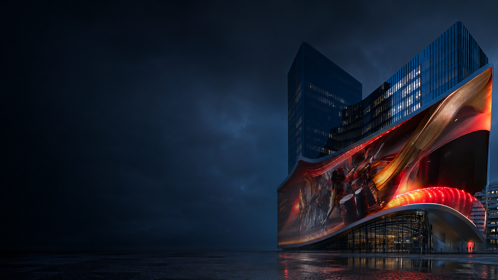
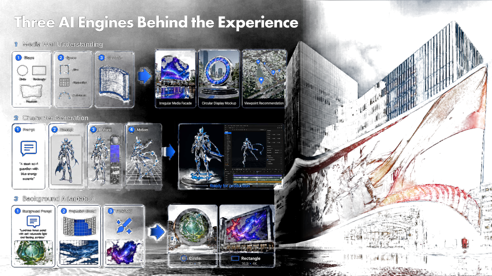
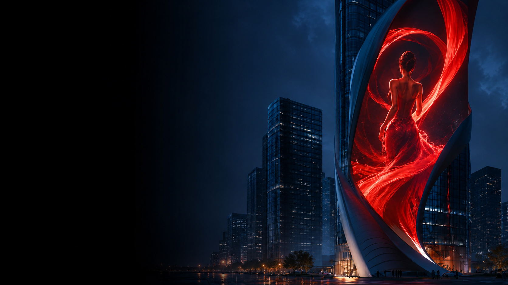
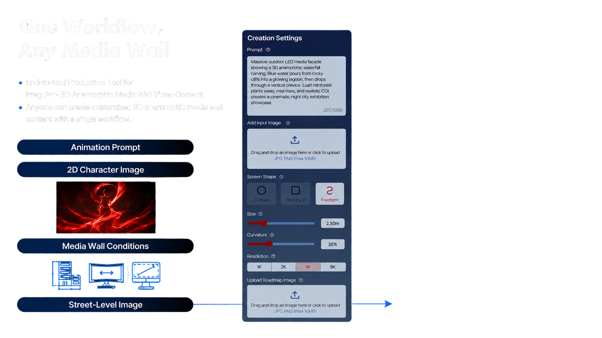
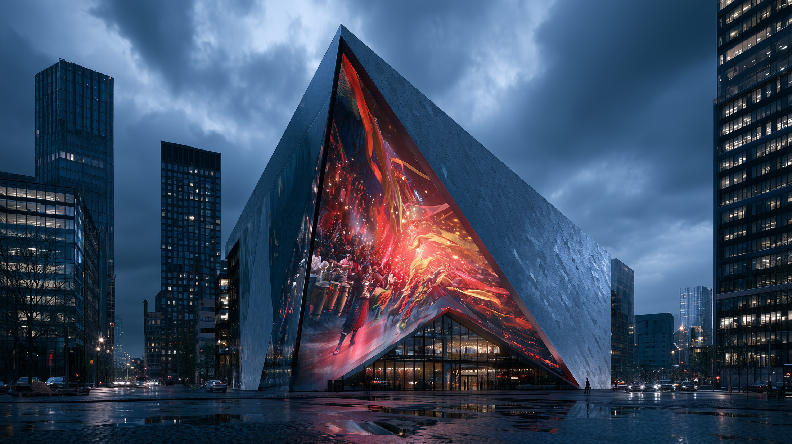

Design starts from screen data.
Anamofit reads each media wall's shape, size, resolution, curvature, and viewing condition as the brief, so production starts from the real display instead of a generic canvas.

Anamofit is an AI-assisted production system for irregular media walls and 3D anamorphic displays. Instead of creating standard rectangular content and adapting it afterward, it uses each site's shape, size, curvature, resolution, installation references, and viewing conditions as design inputs from the beginning.
The workflow connects screen setup, media-wall modeling, multimodal asset and background generation, preview, distortion correction, and final output. It reduces tool switching, repeated editing, on-site trial and error, and dependence on separate specialists while supporting repeatable production for cultural venues, exhibitions, tourism sites, public media walls, and commercial displays.
Anamofit treats every media wall as a design condition: surface shape, viewing angle, venue context, motion depth,
and final playback are considered together before production starts.
Anamofit reads each media wall's shape, size, resolution, curvature, and viewing condition as the brief, so production starts from the real display instead of a generic canvas.
Prompted images, character assets, and backgrounds are generated with the installation conditions already in mind, then refined for the intended screen surface.
The UI follows the actual production sequence: screen setup, media wall modeling, prompt-based asset and background generation, preview, correction, and final output.
The same workflow can support cultural venues, exhibitions, tourism sites, public media walls, and commercial displays without treating each project as a one-off rebuild.
Anamofit semi-automates the work that used to be split across specialists and standalone software.





Instead of generating content first and fitting it to a screen later, Anamofit uses the display's geometry as an input from the beginning. It integrates irregular display adaptation and automated 3D anamorphic content generation into one workflow.
Text prompts, character images, and video references generate production-ready 3D assets, animation instructions, and display-optimized backgrounds while inpainting, distortion correction, and resolution enhancement prepare the final output.